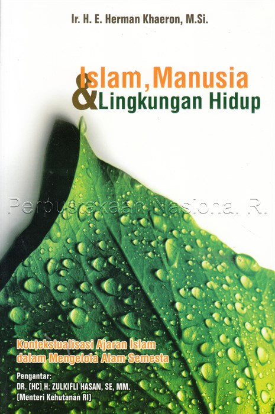

| Identitas Buku | Keterangan |
| Judul Buku | Islam, Manusia, dan Lingkungan Hidup |
| Pengarang | Ir. H. E. Herman Khaeron, M. Si. |
| Penerbit | Nuansa Cendekia |
| Tahun Terbit | 2014 |
| Tebal Buku | 132 Halaman |
| ISBN | 978-602-7768-73-4 |
| Ukuran Buku | 15,5 X 23,5 cm |
Akhir-akhir ini krisis permasalahan lingkungan semakin parah, namun disisi lain tidak ada upaya yang berarti untuk memulihkannya. Ini akibat dari keserakahan manusia dalam menguasai alam untuk kepentingan pribadinya sendiri secara egoistik. Di samping itu pertambahan penduduk bumi yang semakin meningkat, turut memperparah krisis yang terjadi. Krisis lingkungan yang demikian parah tentu menimbulkan berbagai masalah dalam kehidupan umat manusia di bumi. Eksploitasi sumber daya alam secara berlebihan dan tanpa pemulihan yang semestinya menyebabkan rusaknya keseimbangan alam, tanah, air, dan udara. Yang pada akhirnya mengancam kehidupan di bumi. Bila hal ini dibiarkan terjadi terus menerus, maka tidak mustahil pada suatu saat nanti, umat manusia akan punah karena bumi tempat mereka hidup sudah tidak layak untuk ditempati. Perlu kita renungkan bersama, ajaran agama seperti apa yang telah kita kembangkan selama ini sehingga minim sekali perhatian kita terhadap krisis ekologi dan perusakan lingkungan. Kita yakin bahwa ajaran agama, termasuk ajaran yang menyangkut masalah lingkungan. Dan sudah tiba saatnya bagi kita untuk mengkaji dan mengembangkan pandangan dan ajaran agama yang diperlukan untuk memecahkan masalah ekologi.
Salah satu korelasi yang dibahas di buku ini adalah antara Manusia dan Energi. Berangkat dari pengertian energi sebagai power untuk terjadinya kerja, kekuatan, dan untuk hidup, maka Allah-lah yang maha kuat (al-Qawi). Dialah pencipta energi dan sumber kekuatan (Power resource, the most strenght). Untuk memudahkan menyalurkan energi demi kepentingan kehidupan manusia dan makhluk bio lainnya, Allah menciptakan matahari sebagai sumber energi terbesar di alam dunia, serta geothermal (panas bumi). Energi tersebut berpusat pada Allah yang sekaligus sebagai pencipta energi; jika siklus arus energi pada proses ekosistem spiritual dilakukan oleh seorang muslim maka hal itu dapat diketahui secara jelas. Ketika orang sedang beraktivitas ibadah ritual seperti shalat, haji, atau berpuasa, dia memerlukan energi. Energi bermula dari Allah, yang disalurkan pada matahari, dan darinya disalurkan kepada tumbuhan sebagai produsen primer, kemudian di transfer secara berantai kepada semua konsumen, hingga sampai kepada manusia. Kekuatan ini kemudian di transfer kembali kepada Allah dalam bentuk ibadah tadi.
Kelebihan dan Kelemahan Buku
Link pembelian buku Islam, Manusia, dan Lingkungan Hidup, Klik disini!
Yang mengerjakan tugas ini:| Nama | : | Larasati Maulida Putri |
|---|---|---|
| NIM | : | 11210251000003 |